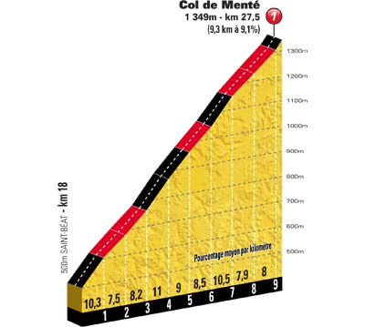

- Km 27.5 - Col de Menté (1 349m) - 9.3 km de montée à 9.1 % - Catégorie 1
- Km 55.5 - Col des Ares (797 m) - 6.0 km de montée à 5.3 % - Catégorie 2
- Km 76.0 - Côte de Burs - 1.2 km de montée à 7.6 % - Catégorie 3
- Km 111.5 - Port de Bales (1 755 m) - 11.7 km de montée à 7.7 % - Catégorie H
- Km 142.5 - Peyragudes - 15.4 km de montée à 5.1 % - Catégorie 1

|